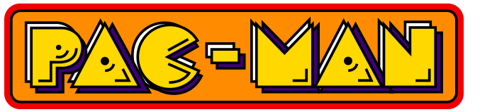
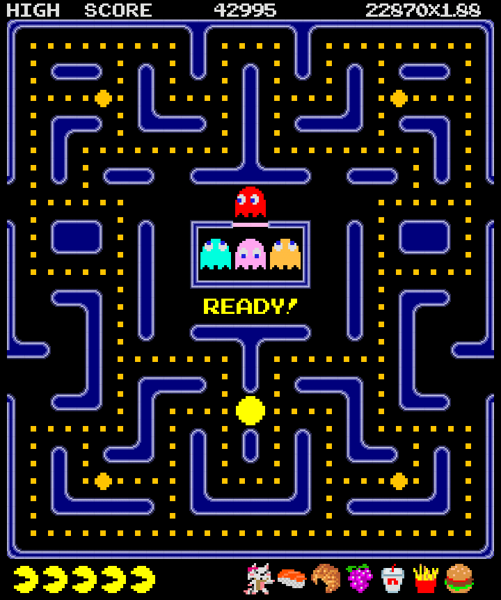

O Pac-Man é um jogo que foi criado em 1980.
Com o objetivo de controlar uma bolinha amarela num labirinto,
comer pontos e evitar os fantasmas.
O objetivo principal do Pac-Man é percorrer todo o labirinto e comer todos os pontos nos corredores. Durante o percurso, o jogador deve evitar os fantasmas, pois ser apanhado faz perder uma vida. Existem também pontos especiais que permitem ao Pac-Man comer os fantasmas durante pouco tempo, ajudando a aumentar a pontuação.
O Pac-Man é uma personagem amarela e redonda, facilmente reconhecida pela sua boca que se abre e fecha enquanto come. O jogador controla os seus movimentos através das teclas direcionais, escolhendo os caminhos para recolher os pontos.
Os fantasmas são os principais inimigos do Pac-Man e perseguem-no nos corredores do labirinto. Cada fantasma possui uma cor e um comportamento próprios. O labirinto contém vários caminhos, curvas e obstáculos. Para conseguir uma pontuação boa, o jogador deve conhecer os percursos e aproveitar as oportunidades para fugir aos fantasmas.
